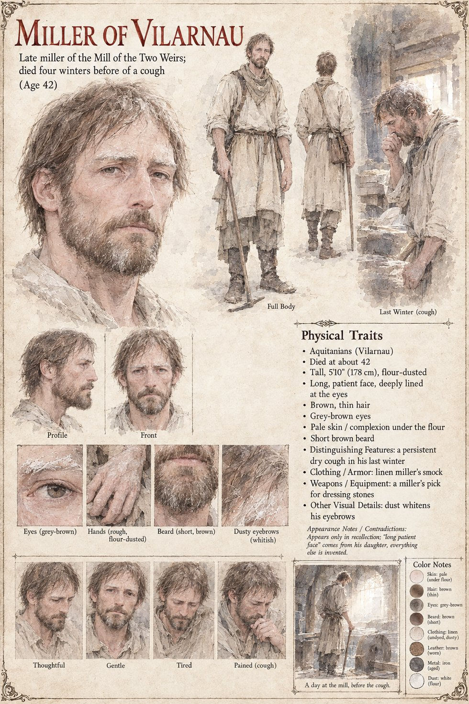

The Miller of Vilarnau
Late miller of the Mill of the Two Weirs · husband of Ermengarda, father of Gersenda and Peire · died four winters before the opening of a cough · 42 by his sheet
He is dead before the story begins. Ermengarda is introduced as the widow of the miller of Vilarnau, who had died four winters before of a cough, and she runs the Mill of the Two Weirs herself with a hired boy, a stubborn red ox, a daughter of sixteen and a son of eight. All the manuscript keeps of him besides the cough is a face: Gersenda, studying the stranger from the doorway, has her mother's gap in the teeth and her late father's long patient face.
What he leaves is the house the story happens in: the mill with its race frozen in Kerren and its two weirs, one of whose sluice-gates Higaide mends; the loft above the grinding-floor, warm from the stones turning below, where the stranger is put; the byre where the red ox stands; the forty measures of seed-grain that his widow will not give up to the sergeant; and a son, Peire, whom the valley calls the miller's son. The manuscript does not say whether the ox, the weirs or the loft were his, and the page does not guess.
The sheet says that he appears only in recollection, that the long patient face comes from his daughter and that everything else is invented. Its man is 42, tall at 5 ft 10 in and flour-dusted, with thin brown hair, grey-brown eyes, a short brown beard, a long lined face and eyebrows whitened with dust, in an undyed linen smock, with a miller's pick for dressing stones. One panel is captioned Last Winter (cough) and shows him with a hand to his mouth; its scene, A day at the mill, before the cough, shows him standing with his pick beside a millstone in a room full of light. The age, the build, the beard and the pick are the sheet's own.